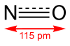

nitrogen-monoxide

Definition: Nitric oxide (nitrogen oxide or nitrogen monoxide) is a colorless gas with the formula NO. It is one of the principal oxides of nitrogen. Nitric oxide is a free radical: it has an unpaired electron, which is sometimes denoted by a dot in its chemical formula (•N=O or •NO). Nitric oxide is also a heteronuclear diatomic molecule, a class of molecules whose study spawned early modern theories of chemical bonding.An important intermediate in industrial chemistry, nitric oxide forms in combustion systems and can be generated by lightning in thunderstorms. In mammals, including humans, nitric oxide is a signaling molecule in many physiological and pathological processes. It was proclaimed the "Molecule of the Year" in 1992. The 1998 Nobel Prize in Physiology or Medicine was awarded for discovering nitric oxide's role as a cardiovascular signalling molecule.Nitric oxide should not be confused with nitrogen dioxide (NO2), a brown gas and major air pollutant, or with nitrous oxide (N2O), an anesthetic gas.
Source: Wikipedia
Wikipedia Page (Something wrong with this association? Let us know.)
Wikidata Page (Something wrong with this association? Let us know.)